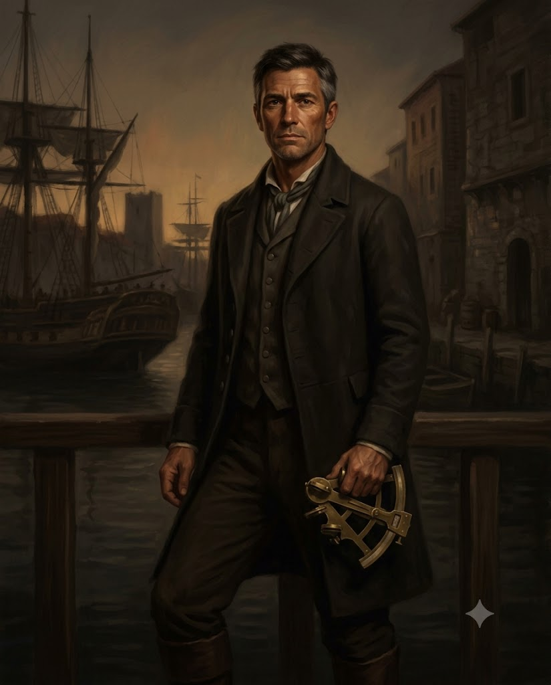

!nathaniel-holt.jpg
Holt at an Egyptian harbour, September 1814 — plain travelling coat, his brass sextant in hand. Original art; public-facing likeness.
Characteristics
Point assignment method (460 total). Age 29 (20-39 bracket: 1 EDU improvement check, rolled successfully, +5 to EDU).
| Characteristic | Regular | Half | Fifth |
|---|---|---|---|
| STR | 55 | 27 | 11 |
| CON | 60 | 30 | 12 |
| SIZ | 55 | 27 | 11 |
| DEX | 70 | 35 | 14 |
| INT | 65 | 32 | 13 |
| POW | 50 | 25 | 10 |
| APP | 50 | 25 | 10 |
| EDU | 60 | 30 | 12 |
Derived
| Attribute | Max | Current |
|---|---|---|
| HP | 11 | 11 |
| MP | 10 | 10 |
| Luck | — | 55 |
| Sanity | 50 | 50 |
Reputation
| Attribute | Value |
|---|---|
| Starting Reputation | 20 |
| Current Reputation | 20 |
| Censure | 0 |
Combat
| Attribute | Value |
|---|---|
| Move | 8 |
| Build | 0 |
| Damage Bonus | 0 |
| Dodge (Regular) | 35 |
| Dodge (Half) | 17 |
| Dodge (Fifth) | 7 |
Status
- [ ] Temporary Insanity
- [ ] Indefinite Insanity
- [ ] Major Wound
- [ ] Unconscious
- [ ] Dying
Personal Description: Medium height, lean and weathered in the way sailors are — the skin around his eyes is lined from years of squinting into glare. Dark brown hair, cut short, salted early at the temples. Clean-shaven. His hands are hard with rope calluses. He wears civilian clothes aboard (a plain dark coat, good boots, no lace) but carries himself like a man accustomed to a quarterdeck. Stands with his weight forward, balanced, the stance of someone who learned to walk on a moving surface. His face rests at neutral, not unfriendly, just waiting. When he speaks it is plainly and without hurry.
Traits: Direct. He says what he means and assumes others do the same, which occasionally makes him obtuse in social situations that run on subtext. Patient with physical hardship, impatient with disorder. Does his own maintenance — cleans his own pistol, mends his own coat, coils his own lines. Not because he must, but because idle hands make him restless. Underneath the steadiness is a man who keeps moving because stillness is where the thinking happens.
Ideology & Beliefs: Duty. King and country, the Navy, the chain of command. He believes in competence, preparation, and the idea that a good officer keeps his people alive. He is not religious in any meaningful way — he has seen too much sea to believe in a benevolent God — but he respects the ritual of it. He believes the world is fundamentally knowable if you pay enough attention.
Significant People:
- His brother, William Holt (dead). Lieutenant on HMS Colossus at Trafalgar. Killed by a splinter through the chest. Nathaniel was 20, serving on HMS Orion in the same engagement. He saw the Colossus take fire but did not know William was dead until three days later.
- Captain James Marsh (retired). Holt’s first captain, aboard HMS Seahorse. Taught him everything a midshipman needed to know and most of what an officer needed to forget.
Meaningful Locations:
- The quarterdeck of HMS Dryad, his last posting. A frigate, 36 guns, two years in the Channel. He loved that ship.
- Portsmouth harbour. Where everything starts and ends.
Treasured Possessions:
- William’s pocket watch. Returned with his effects. It stopped at 2:14, which was not the time William died, but Nathaniel has never had it repaired.
- A sextant, brass, well-used. His own, not Navy issue. The one piece of equipment he trusts absolutely.
Occupation: Naval Officer Formula: EDU × 2 + DEX × 2 = 120 + 140 = 260 occupation points Personal Interest: INT × 2 = 130 points
| Skill | Base | Regular | Half | Fifth | Source |
|---|---|---|---|---|---|
| Climb | 20 | 40 | 20 | 8 | PI (+20) |
| Credit Rating | 00 | 15 | 07 | 03 | Occ (+15) |
| Cthulhu Mythos | 00 | 00 | 00 | 00 | — |
| Dodge | — | 35 | 17 | 7 | Base only |
| Fighting (Brawl) | 25 | 50 | 25 | 10 | Occ (+25) |
| Fighting (Cutlass) | 01 | 40 | 20 | 8 | PI (+39) |
| Firearms (Pistol) | 20 | 55 | 27 | 11 | Occ (+35) |
| First Aid | 30 | 42 | 21 | 8 | PI (+12) |
| Intimidate | 15 | 40 | 20 | 8 | Occ (+25) |
| Language (English, Own) | 60 | 60 | 30 | 12 | EDU |
| Language (French) | 01 | 17 | 08 | 03 | Occ (+16) |
| Listen | 20 | 40 | 20 | 8 | PI (+20) |
| Navigate | 10 | 55 | 27 | 11 | Occ (+45) |
| Pilot (Boat) | 01 | 40 | 20 | 8 | Occ (+39) |
| Psychology | 10 | 25 | 12 | 5 | PI (+15) |
| Science (Astronomy) | 01 | 25 | 12 | 5 | PI (+24) |
| Spot Hidden | 25 | 55 | 27 | 11 | Occ (+30) |
| Swim | 20 | 50 | 25 | 10 | Occ (+30) |
Occupation points spent: 25 + 35 + 30 + 45 + 39 + 25 + 30 + 16 + 15 = 260 ✓ Personal interest spent: 20 + 39 + 12 + 20 + 15 + 24 = 130 ✓
None at character creation. Old scars from splinters and rigging burns on both hands and forearms.
None at character creation.
None. Cthulhu Mythos 0%. Holt has seen nothing stranger than St. Elmo’s fire and a waterspout off Ushant.
None prior to boarding La Speranza.
| Weapon | Skill % | Damage | Attacks | Range | Ammo | Malf |
|---|---|---|---|---|---|---|
| Unarmed (Brawl) | 50/25/10 | 1D3 | 1 | — | — | — |
| Cutlass | 40/20/8 | 1D8 | 1 | — | — | — |
| Flintlock Pistol | 55/27/11 | 1D6+1 | 1 | 15 yds | 1 | 95 |
| Knife | 50/25/10 | 1D4 | 1 | — | — | — |
To be populated at the table. Holt is crew (assigned as ship’s doctor, though he is not one), not part of the party’s mission. He may be drawn in by events during the voyage.
{Player-facing notes. Protected — skills never modify.}
Relationships
- Crew La Speranza — Assigned as ship's doctor — except he's not a doctor. Begged and pulled strings to get a posting on a ship heading south and east. The crew got an unnecessary officer instead of a surgeon. Technically outranks everyone except the captain.
- Professional Capitano Niccolo Zanier — Holt is technically Zanier's subordinate as crew, but outranks him in naval terms. The relationship is respectful — Holt defers to Zanier's authority aboard his own ship.
Equipment
Personal Kit:
- Flintlock pistol (Sea Service pattern, well-maintained)
- Cutlass (Navy issue, plain hilt)
- Folding knife
- Powder flask and shot (12 rounds)
- Sextant (brass, personal)
- William’s pocket watch (stopped at 2:14)
- Sea chest with spare clothes, shaving kit, letters of reassignment
- Oilskin coat
Wealth:
| Attribute | Value |
|---|---|
| Spending Level | Officer on half-pay (modest) |
| Cash | ~£15 (journey funds, Navy travel allowance) |
| Assets | Half-pay of £91/year while between active postings |
Chapter 4, Session 1 — The Morning After
Lieutenant Nathaniel Holt of the Royal Navy stood on the Trieste docks with a trunk at his feet and the particular expression of a man who had begged and pulled strings to get assigned as ship’s doctor to a vessel heading south and east, and was now confronting the reality of what he had begged for. The crew had requested a surgeon. The Navy sent an officer with First Aid and a sextant. La_Speranza was ninety feet of salt-stained oak with blistering paint and rigging tarred nearly black, sitting low in the water with a chicken coop lashed to the foredeck and a leathery, nearly toothless Greek cook stirring something over a brick firebox that smelled of boiled onion and regret. Holt technically outranked everyone aboard except the captain, and could not set a bone. He spent his first evening aboard rather than at the Locanda_Grande with the party, pitching in with the crew’s preparations, coiling rope and checking rigging with the habitual competence of a man who had spent years at sea and could not stop his hands from finding work. Petar, the Ragusan bosun with two missing fingers and the genuine regard of every sailor aboard, strung up a hammock next to his own and told Holt that anyone who wanted to bother him would have to go through him first. The alliance was immediate and uncomplicated, the kind of respect that passed between men who understood ships and said so with their hands rather than their mouths.
The next morning, when the party arrived to board, Holt directed Luka and Drago to load the supply crates and asserted quiet authority over Endicott’s fussing about the mysterious iron-banded crate in the hold. Endicott crumbled. The crew noticed. At dawn, the hawsers came off the bollards and Captain Zanier stood at the wheel, and Holt stood where sailors stand, watching the harbour mouth pass on both sides and the open Adriatic stretch ahead. He was heading for the Indian Ocean squadron by way of the longest possible route, aboard a merchant brig that smelled of tar and onion, in the company of English aristocrats who carried more weapons than their luggage could reasonably explain and a Greek cook whose culinary ambitions exceeded his abilities by a considerable margin. The voyage would take six weeks. Lieutenant Holt intended to make himself useful for every one of them.
Chapter 4, Session 2 — The Becalming
The first thing Holt did on the first full morning at sea was what any officer of his experience would do without being asked — he turned out at first light and fell in beside Petar for the dawn inspection of the running rigging. The Ragusan moved through the standing gear with the economy of ten thousand mornings, and Holt matched him in silence until he found it: a shroud seized with condemned worming that would have parted in the first real blow. He said so quietly. Petar said something in Ragusan that may have been an oath or a prayer and went to find a marline-spike, and the crew heard about it by noon in the way crews always hear about everything, and the quality of their reception of Lieutenant Holt changed in the particular way that has nothing to do with rank and everything to do with whether a man knows what a shroud is for. That evening he set up a game of Crown and Anchor on an upturned crate under the mainmast boom, ran the bank himself, and separated eight sailors from a proportion of their wages with the cheerful benevolence of a man whose mathematics were considerably better than his medicine. The crew enjoyed it. The house enjoyed it more.
The Strait of Otranto found them on a morning when the wind was wrong and had settled in to stay that way. The passage between the Italian heel and the Albanian mountains — narrow, opinionated, swept by a hard northwest blow and a current that did not negotiate — was precisely the kind of problem a Royal Navy lieutenant either made himself useful solving or did not bother returning to the quarterdeck. Holt went to Captain Zanier without waiting to be invited, because the feel of the deck under his feet and the look of the sky told him there was no time for waiting, and together they brought La_Speranza through it. The work was neither elegant nor quick — it was patient and hard and the brig fell off twice before they found the angle — but they found it, and the grey mountains of Albania passed to starboard and fell away behind. Zanier did not say much afterward. He said enough.
On the eleventh day south of Crete, the wind died. Not eased, not backed — died, as sounds die when a door closes in a house where something has changed, and Holt stood at the rail and catalogued the silence the way a naval officer catalogues everything, without being asked and without finding an explanation he was willing to put to paper. La_Speranza sat in water that had gone from blue chop to a black mirror between one watch and the next, and the stillness was the wrong kind of stillness — not the flat, usable emptiness of a genuine calm but an absence, as though the air had stepped back to observe. Then the phosphorescence appeared at nightfall, cold and green, tracing the full length of the hull below the waterline from stem to stern with a light that carried no warmth and no precedent, as though something on the far side of the planking had brought a lamp and was making a deliberate survey of what it found. Then the knocking began, slow and patient, felt through the soles of a man’s boots before it was heard anywhere else — rising through the bilge and the deck and the timbers with a regularity that had nothing to do with any meteorological cause and nothing in common with the sounds of a working ship. Holt had learned La_Speranza’s voice in the first three days out of Trieste, the way a sailor always learns a ship’s voice, and he knew every sound she was capable of making. This was not one of them.
By the twelfth day The_Drowned had gathered in numbers beneath the hull and their moan came up through the planking in the watches of the night, low and patient and sourceless. The crew did not name what was below them, in the way that sailors of long experience are careful about naming things in open water. Holt, standing the middle watch in a calm that had now held through a full rotation of the sky with no sign of shifting, was the worst possible man aboard to disbelieve what his crew refused to name. He had been at sea long enough to know what the sea was — what it kept, and what it remembered — and that knowledge, which had always been the foundation of every confidence he possessed, was precisely what made this so difficult.
Session 3 — Give Rest
When the mob formed, Holt was already in front of it. Not by calculation — by the instinct that puts a bosun between his hands and a fraying line — and he said, clearly and without heat, that there was no call to kill the man, that they could take Endicott out of the cabin, put him in irons, tie him to the mast and keep him there until morning, that restraint and murder were not the same choice and the sea had not yet asked them to make the latter. The mob heard him the way mobs hear reasonable arguments at moments of mass conviction, which is to say it heard him and moved him aside, and Holt stepped back into the position of a man who has done what he could do and is now watching the consequences arrive. He offered Captain Zanier his own pistol, handle first, while he made the case for abandoning the brig entirely — he had already worked the numbers, knew they were somewhere in the vicinity of twenty-five nautical miles from Gavdos, had run the arithmetic on boats and bearing and the wind if the wind came — and Zanier looked at the pistol, looked at Holt, and told him that what he was proposing was mutiny, and that the conversation was finished. It was the correct legal answer and the wrong answer in every other way Holt could calculate, and he put the pistol back in his coat and did not say so.
The dead came at nightfall, which he had known they would, the way a man who has spent years reading skies and seas and the behaviour of things in open water knows that certain consequences follow certain omens without being able to put the mechanism to paper. He had formed up with the others on the quarterdeck, had kept Petar’s steadier men around him, had his pistol in hand and his attention on the rail, and it was not enough. When the first grey hands closed over the gunwales and The_Drowned hauled themselves over the side in numbers — split-knuckled, patient, waterlogged with the weight of whatever they were carrying — the knowledge that he had been prepared for this and the sight of the actual thing failed to connect, and the pistol left his grip. It hit the deck and discharged, and the report came up through the planking and the night air and every man on the quarterdeck heard it, and the sound of it was perfectly precise. Georgiana Wentworth finished the rite alone, cracked-voiced, with the dead already aboard, and it was enough, and when the wind came it was a fact to be grateful for without reservation.
Alexandria was easier. Holt had given Freddy and Thomas Wyndham considerable latitude at Stelios’s, because a man who has watched two days of horror handled with reasonable courage ought to be permitted his date Arak, and he had not anticipated the particular enthusiasm with which they intended to lose the drinking contest they’d set each other. He steered them back through the lanes of the Frank Quarter by landmarks — the minaret, the tanner’s smell, the lamp above the Locanda’s Venetian lion — and ordered a crate of the Arak delivered on the way, because Thomas had claimed a small victory and the evening deserved some kind of conclusion. When Pyke, the antiquities dealer, found Freddy in the common room and leaned in with his questions, Holt caught the shape of what was happening before Freddy had finished the sentence about dead men in the water, and he told the man simply that Freddy had been seasick the entire voyage, had eaten something that disagreed with him in a vivid and sustained manner, and was not a reliable witness to anything at present — would he like to speak to someone in a condition to be coherent. Pyke left. The crate arrived. Holt sat in the courtyard of the Locanda del Leone with the sounds of Alexandria coming through the walls and was, for the moment, grateful the night was asking nothing further of him.